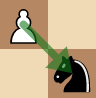

Causal Chess is a indie game that I'm develoing in my spare time. Casual Chess is similar to regular chess but with a twist.
This game is in very early development and things are likely to change.
Casual Chess is just like normal chess for the first 10 rounds. But after every 10 rounds, both players enter the shop. Each player starts with 10 gold but since black goes second, they receive a coin to balance the game.
The coin is a item that the player using the black pieces can use at will during any shop period. The coin grants one gold during the first shop period and increases in value by 1 for each shop period. The player may want to use the coin early to get a head start and play aggresive or try to get as much value as possible from the coin by keeping it and playing more positionaly and tactically.
In the shop, players are able to buy upgrades that help them during the game. For example, one of the upgrades allows your pawns to capture diagonally back like this:
In the end Casual Chess is the same as chess. You play the game and try to checkmate the opponent. The only diffrence is the means of getting to that checkmate which
